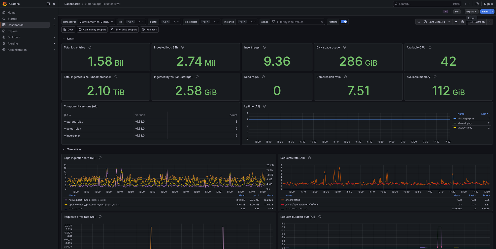
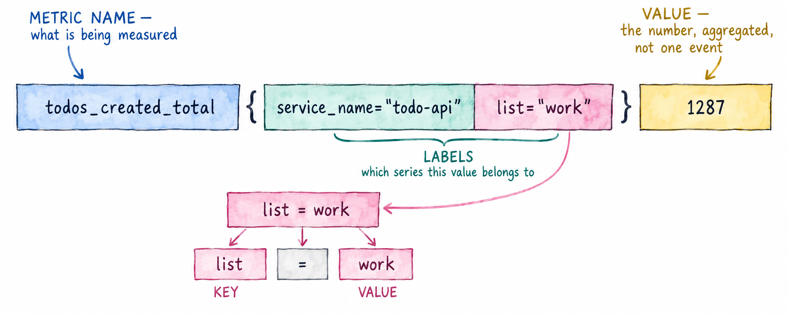
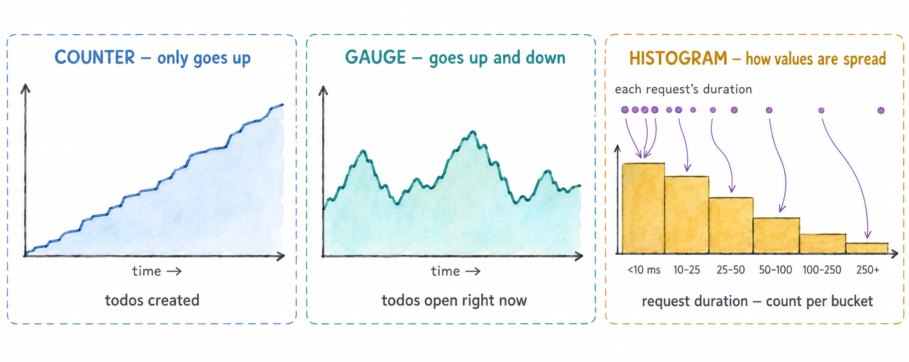
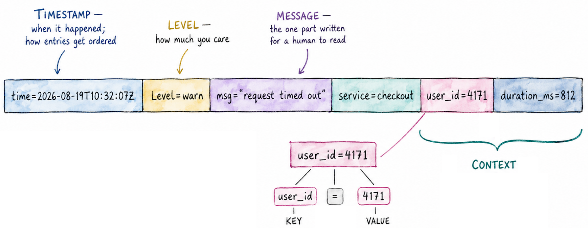
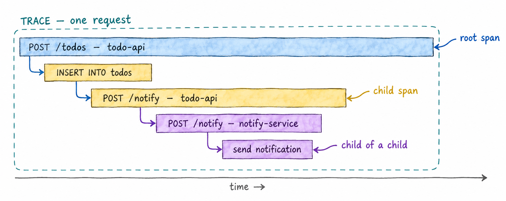

Module 1: Observability and OpenTelemetry
Before touching any code, this module sets out what observability means, the three kinds of data it relies on — metrics, logs and traces — and what OpenTelemetry is, so that the rest of the workshop builds on a shared vocabulary. 🧠
Learning Objectives
By the end of this module, you will:
- Know what observability is, what telemetry is, and how observability differs from monitoring
- Know what a metric, a log record and a trace are
- Know what OpenTelemetry is, what it provides and what it doesn’t
- Know where each signal is stored in this workshop
1.1 — What observability is
Observability is being able to understand what a system is doing, and why, from the data it emits — without having to change its code or deploy a new version every time you have a new question.
That data is called telemetry: measurements and records that an application produces about its own behaviour while it runs. How many requests it is serving, how long they take, which ones fail, what happened inside each one.
A system is observable when its telemetry lets you answer questions like these:
- Is it working right now? Are users getting errors, or waiting longer than usual?
- When something goes wrong, where? In which service, on which endpoint, for which users?
- Why? What was different about the requests that failed?
In practice it looks like this: the application emits telemetry, a backend stores it, and a tool like Grafana lets you query it and see it.
Monitoring and observability
The two words often appear together, and they are related, but they don’t mean the same thing.
Monitoring is watching for problems you already know about. You decide in advance what matters — the error rate, the latency, the disk filling up — build a dashboard for it, like the one below, and set an alert that fires when a value crosses a threshold. It answers the question is something wrong?, for the failures you were able to predict.

Observability is being able to investigate problems you didn’t predict. When an alert fires, or a user reports something no dashboard shows, you need to ask new questions — which requests are slow? what do they have in common? where does the time go? — and get the answers from the telemetry you already have, without shipping new code first.
For that, what counts is all the raw telemetry the system emits, not a selection of it already drawn on a dashboard. This, for example, is a fragment of the metrics a single Go program exposes: hundreds of series about its memory and its garbage collector. Nobody puts all of them on a dashboard, but they’re there for the day a question needs them.
# HELP go_gc_cycles_total_gc_cycles_total Count of all completed GC cycles.
# TYPE go_gc_cycles_total_gc_cycles_total counter
go_gc_cycles_total_gc_cycles_total 4178
# HELP go_gc_duration_seconds A summary of the wall-time pause (stop-the-world) duration in garbage collection cycles.
# TYPE go_gc_duration_seconds summary
go_gc_duration_seconds{quantile="0"} 4.264e-05
go_gc_duration_seconds{quantile="0.25"} 5.74e-05
go_gc_duration_seconds{quantile="0.5"} 7.328e-05
go_gc_duration_seconds{quantile="0.75"} 9.705e-05
go_gc_duration_seconds{quantile="1"} 0.00033989
go_gc_duration_seconds_sum 0.58628048
go_gc_duration_seconds_count 4178
# HELP go_gc_gogc_percent Heap size target percentage configured by the user, otherwise 100.
# TYPE go_gc_gogc_percent gauge
go_gc_gogc_percent 100
# HELP go_gc_heap_allocs_by_size_bytes Distribution of heap allocations by approximate size.
# TYPE go_gc_heap_allocs_by_size_bytes histogram
go_gc_heap_allocs_by_size_bytes_bucket{le="8.999999999999998"} 1.504735e+07
go_gc_heap_allocs_by_size_bytes_bucket{le="24.999999999999996"} 5.11605082e+08
go_gc_heap_allocs_by_size_bytes_bucket{le="64.99999999999999"} 6.88034454e+08
go_gc_heap_allocs_by_size_bytes_bucket{le="144.99999999999997"} 7.36567619e+08
go_gc_heap_allocs_by_size_bytes_bucket{le="320.99999999999994"} 8.13562355e+08
go_gc_heap_allocs_by_size_bytes_bucket{le="+Inf"} 8.37473303e+08
go_gc_heap_allocs_by_size_bytes_sum 1.82533046496e+11
go_gc_heap_allocs_by_size_bytes_count 8.37473303e+08
...
| Monitoring | Observability | |
|---|---|---|
| Questions | Known in advance | Come up during an investigation |
| Answers | Is something wrong? | Where, and why? |
| Typical tools | Dashboards and alerts | Queries that filter, group and follow a single request |
Monitoring is built on top of the same telemetry. A system that is observable can be monitored, and the alert is usually where an investigation starts.
Telemetry comes in three kinds, called signals: metrics, logs and traces. The next three sections explain each one.
1.2 — Metrics
A metric is a number measured over time. Instead of recording every event, the application keeps aggregated values — a count, a sum, a distribution — and exports them periodically, by default every 60 seconds (every 10 in this workshop).
Here is one metric, a counter of the todos created, broken into its parts:

Each combination of metric name and label values is a separate time series: the same
counter with list="home" instead of list="work" is a different series, with its own
value. The number of distinct time series is what we call cardinality, and for now it’s
enough to know that it’s important to keep it low.
Types of metric
The metric above is a counter. There are a few types of metric, and the three you’ll use most are:
| Type | What it records | Example |
|---|---|---|
| Counter | A total that only goes up | todos created |
| Gauge | A value at a point in time, which goes up and down | todos currently open |
| Histogram | The distribution of measured values | request duration |

A histogram doesn’t keep each value it measures. It counts how many fell into each range, called a bucket: how many requests took under 10 ms, how many between 10 and 25 ms, and so on. That’s enough to answer questions like how long did the slowest 5% of requests take? without storing every request.
1.3 — Logs
A log record describes one event that happened at a specific moment: a request failed, a todo was created, a connection was retried. Unlike a metric, every event produces its own record. A log record has a body (the message), a severity, a timestamp and attributes, and if it was emitted while handling a request, the identifiers of that request’s trace.

The context is what makes a log line useful beyond reading it: each key=value pair is a
field you can filter and group by.
1.4 — Traces
A trace follows one request through the system. It is made of spans: each span is
one operation with a start time, a duration and attributes — handling an HTTP request,
running a database query, calling another service. Spans have parents, so together they
form a tree showing what happened, in what order, and how long each step took. When a
request goes from one service to another, the trace id travels with it in an HTTP header
(traceparent), so the spans of both services end up in the same trace.

1.5 — What OpenTelemetry is
OpenTelemetry (OTel for short) is an open-source project, part of the Cloud Native Computing Foundation, that standardises how applications produce telemetry and how it is sent somewhere. It provides:
- An API and an SDK for each language — JavaScript, Python, Java, Go, .NET and many more — to create telemetry from your code.
- Instrumentation libraries that produce telemetry for common frameworks and libraries (HTTP servers, database drivers, HTTP clients) without you writing that code.
- Semantic conventions: agreed names for common things —
service.name,http.route,http.response.status_code— so telemetry from different languages and libraries looks the same. - OTLP, the OpenTelemetry protocol, to send telemetry from one component to another.
- The Collector, a program that receives telemetry, processes it and sends it on.
OpenTelemetry does not store or display telemetry. That is the job of a backend — in this workshop VictoriaMetrics, VictoriaLogs and VictoriaTraces — and of a tool like Grafana. Because the format and the protocol are standard, you instrument your application once and can send its telemetry to any compatible backend without changing the code.
It covers all three signals — metrics, logs and traces — with the same API, the same protocol and the same Collector.
1.6 — Where each signal goes in this workshop
Your application sends all three signals to the OpenTelemetry Collector, which forwards each one to its own storage:
| Signal | Stored in | Queried with |
|---|---|---|
| Metrics | VictoriaMetrics | MetricsQL (PromQL-compatible) |
| Logs | VictoriaLogs | LogsQL |
| Traces | VictoriaTraces | LogsQL |
Logs and traces share the same query language.